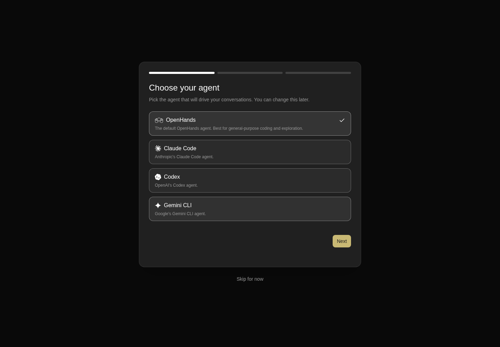

How to get to it
- First run: open any URL of the app in a browser profile that has never onboarded. Every
control-openhands launch --newstarts with a fresh browser profile, andcontrol-openhands browser resetgives the same run a fresh one again. Backend-side state (consent answer, LLM profile, agent kind) stays. - Public mode:
control-openhands launch --new --publicserves the UI without the injected key, so step 0 is "Add a backend". The API-key screen appears after skipping onboarding, after removing the last backend under backend selector → Manage backends (see F25), or when the server's key changes under a stored one. - Telemetry consent: appears by itself over onboarding or the app. It is changed later in Settings → Application (see F16).
- Onboarding preview: direct URL with
?previewOnboardingStep=N, for example/?previewOnboardingStep=3or/settings/app?previewOnboardingStep=3. - Last onboarding step: Close, a recommended-automation card, or the "Skip Getting Started checklist" box below the modal.
- Not-found page: any unknown direct URL, such as
/this-route-does-not-exist. Its Home button returns to/. - There is no command-menu entry or keyboard shortcut for onboarding.
Before you start
Start with the common launch and health checks, then follow this family’s preconditions in order. Recipes share the fixtures and state named below.
Preconditions:
- A fresh run you launched yourself:
control-openhands launch --new(local) orcontrol-openhands launch --new --public, thenexport OH_VERIFY_RUN=<run from the launch JSON>andcontrol-openhands doctor. Do not runcontrol-openhands onboard --skip: it consumes the first-run state this family tests. - The model-backed say-hello check needs a DeepSeek key in
DEEPSEEK_API_KEY. It is typed into the onboarding form with--value-env, which replacesllm preset deepseekhere. - Each fresh browser profile walks first run once;
control-openhands browser resetstarts another first run on the same stack. Local and public mode still need separate runs (launch --newandlaunch --new --public): the local walk, public run A (backend step walked) and public run B (onboarding skipped). Stop each one withcontrol-openhands stopwhen done. - Desktop viewport unless stated.
Behavior inventory
22 stable behavior IDs and their expected behavior
F01.first-run-gatewith noopenhands-onboardedflag in localStorage, any URL (including/conversations) shows onlyfirst-run-onboarding-screenwith the onboarding modal. There is no sidebar. Finishing or skipping sets the flag, and the app stays revealed after a reload. Read recipe ↓F01.telemetry-consenton a connected local backend whoseuser_consents_to_analyticsisnull, an elevated "Help improve OpenHands" modal names the backend and host. It has a checked-by-default "Send anonymous usage data" box and "Confirm preferences". Escape does not dismiss it. The choice is saved to backend settings, and the modal does not return after a reload. Read recipe ↓F01.onboarding-modala segmented progress bar (3 steps, or 4 with the backend step) over a sliding rail. Neither Escape nor a click on the backdrop dismisses it. "Skip for now" shows on every step except the last, and Back/Next move between steps. Read recipe ↓F01.onboarding-backend-stepwhen no reachable backend exists (public mode), step 0 "Add a backend" prefills the nameLocaland the page origin as host. Next stays disabled until an API key is typed. A wrong key shows "Could not connect to <host>" / "Invalid API key" inline. The right key saves the backend, and the flow collapses to 3 steps on "Choose your agent" with no Back button. The first paint must not raise an error toast. Read recipe ↓F01.onboarding-choose-agentradio tiles for OpenHands (preselected), Claude Code, Codex and Gemini CLI. Next saves the agent kind with a "Settings saved" toast. Read recipe ↓F01.onboarding-setup-llmthe embedded LLM form is prefilled withopenai/gpt-5.6-sol. Typing a custom model and key then Next saves them. On a local backend it also creates and activates an LLM profile named after the model (deepseek/deepseek-flash→deepseek-flash). Read recipe ↓F01.onboarding-repeat-endpointonboarding again (a new browser, the same backend) with the custom Base URL and key that are already saved creates a profile that keeps that Base URL, and the say-hello conversation reaches that endpoint. The All view prefills the saved Base URL. Read recipe ↓F01.onboarding-acp-secretschoosing an ACP agent swaps the LLM step for "Add your API keys" with that provider's fields. When the host CLI is already logged in, a green "already signed in" banner makes them optional. Back returns to the agent step. Read recipe ↓F01.onboarding-say-hellothe last step has a prefilled message. An empty message disables send. Enter or the send button creates a conversation, navigates to/conversations/<id>and completes onboarding, and the agent replies. A recommended-automations list sits under an "Or" separator, and a "Skip Getting Started checklist" box sits below the modal. Read recipe ↓F01.onboarding-hello-closethe last step has Back and Close instead of "Skip for now". Close dismisses the modal without creating a conversation, sets theopenhands-onboardedflag and leaves the app shell on/. Read recipe ↓F01.onboarding-recommended-automationpicking a card under "Start from a proven workflow" on the last step completes onboarding too. A card with its own setup form (for example "Daily news digest") navigates to/automations/new/<id>and opens that form. Nothing is created until the form is submitted. Read recipe ↓F01.onboarding-skip-checklistthe "Skip Getting Started checklist" box under the last step hides the sidebar Getting started card (F02) once the app is revealed. It is the same per-browser setting as the Settings → Application switch, and it is saved as soon as you tick it, preview mode included. Read recipe ↓F01.onboarding-skip"Skip for now" closes the modal and sets the flag. In public mode, skipping before a key is stored lands on the API-key screen; skipping after the backend step lands in the app. Read recipe ↓F01.onboarding-preview?previewOnboardingStep=0..3on any route opens the modal (data-preview="true") on that phase, even after onboarding. Values outside 0-3 are ignored. Skip and Close do nothing, so leave by navigating to a URL without the parameter. Read recipe ↓F01.onboarding-phoneevery onboarding step fits a 390 px viewport without horizontal overflow. Read recipe ↓F01.api-key-entryin public mode with no usable key (onboarding skipped, the last backend removed, or a stored key the server now rejects), a full-screen "Add a backend" card appears. The host is read-only and set to the origin, and Connect stays disabled until the name and key are filled. A wrong key shows "Invalid API key. Please check the key and try again." The right key opens the app shell, which survives a reload, and the consent modal then names the new backend. Read recipe ↓F01.onboarding-cloud-loginthe backend step's "OpenHands Cloud" column has "Connect to OpenHands" (device-flow login) and an "Advanced" toggle. The toggle reveals a Cloud Host field (placeholderhttps://app.all-hands.dev) for self-hosted Cloud deployments. The login itself is blocked: it needs an OpenHands Cloud account. Read recipe ↓F01.route-error-boundaryan unknown URL renders a "Page not found" page inside the app shell, with the sidebar and a Home link back to/, and logs no page errors. Read recipe ↓F01.document-titlethe tab title isOpenHands. On a conversation it is<status emoji> <conversation title> | OpenHands. Read recipe ↓F01.bootstrap-loadinga centered spinner card shows while/server_infoloads (transient, not-run). Read recipe ↓F01.locked-cloud-first-runon a canvas locked to an OpenHands Cloud host, first run shows only the Cloud login (Add backend) without a progress bar or close button (blocked). Read recipe ↓
Readable recipes
Read each script from top to bottom. Code is copied from the map; prose gives the action, expected observation, and conditions. <id>, <run> and similar placeholders stand for values from your own run. Short forms such as browser count continue the same control-openhands invocation; they are kept as documented.
Expected observations describe the recipe’s contract. Captures below selected recipes show representative real states from this snapshot; they do not mark every mapped behavior as passed. Follow cleanup before moving to another family.
No recipes match. Try another word or a behavior ID.
Local run (launch --new):
First-run gate #
- Do
control-openhands browser goto /conversations - Check
control-openhands browser testids - ExpectThe list starts with
first-run-onboarding-screen,telemetry-consent-formandonboarding-modal;root-layoutis absent. - Do
control-openhands browser screenshot --feature F01.first-run-gate --name fresh - ExpectThe screenshot shows the consent modal over "Choose your agent".
Consent #
- Check
control-openhands browser snapshot 'testid=telemetry-consent-form' - ExpectIt reads
This preference is saved for the local backend “Local” at http://127.0.0.1:<port>.and the checkbox is[checked]. - Do
control-openhands browser press Escape - Check
control-openhands browser count 'testid=telemetry-consent-form' - Notethe count stays
1. - Do
control-openhands browser uncheck 'testid=telemetry-consent-form >> role=checkbox' - Do
control-openhands browser click 'testid=confirm-telemetry-preferences' - Wait
control-openhands browser wait 'testid=telemetry-consent-form' --state detached - Check
control-openhands api GET /api/settings - ExpectIt shows
"user_consents_to_analytics": false. - Do
control-openhands browser reload - Check
control-openhands browser count 'testid=telemetry-consent-form' - Notethe count is
0.
Modal shell #
- Do
control-openhands browser press Escape - Check
control-openhands browser count 'testid=onboarding-modal'(
1) and - Check
control-openhands browser attr 'testid=onboarding-modal' data-current-step(
0). - Do
control-openhands browser mouse-click 40 40 - Noteon the bare backdrop; the count stays
1and the step is unchanged.onboarding-progress-step-0..2exist and-3does not, because the backend is healthy.
Choose agent #
- Check
control-openhands browser attr 'testid=onboarding-agent-option-openhands' aria-checked(
true) and - Check
control-openhands browser count 'testid=onboarding-agent-back'(
0). - Do
control-openhands browser click 'testid=onboarding-agent-option-codex' - Check
control-openhands browser attr 'testid=onboarding-agent-option-codex' aria-checked(
true), and switch back with - Do
control-openhands browser click 'testid=onboarding-agent-option-openhands' - Do
control-openhands browser click 'testid=onboarding-agent-next' - Wait
control-openhands browser wait-text 'Settings saved' - Note
data-current-stepbecomes1. - Do
control-openhands browser click 'testid=onboarding-llm-back' - Note
data-current-stepis0. - NoteClick
testid=onboarding-agent-nextagain.

Onboarding offers OpenHands, Claude Code, Codex and Gemini CLI, with OpenHands selected.
Representative documentation capture, not a complete run of this recipe or family. Captured on an isolated local backend at desktop viewport using the current main checkout.
How this screenshot was taken
canvas: 1.26.0 · agent server: 1.53.0 · sdk: 1.53.0 · automation: 1.19.0
OH_VERIFY_RUN="$OH_VERIFY_RUN" control-openhands browser goto /conversations
OH_VERIFY_RUN="$OH_VERIFY_RUN" control-openhands browser uncheck 'testid=telemetry-consent-form >> role=checkbox'
OH_VERIFY_RUN="$OH_VERIFY_RUN" control-openhands browser click testid=confirm-telemetry-preferences
OH_VERIFY_RUN="$OH_VERIFY_RUN" control-openhands browser wait testid=telemetry-consent-form --state detached
OH_VERIFY_RUN="$OH_VERIFY_RUN" control-openhands browser wait testid=onboarding-modal
OH_VERIFY_RUN="$OH_VERIFY_RUN" control-openhands browser screenshot --feature F01.onboarding-choose-agent --name choose-agentLLM step #
- Check
control-openhands browser snapshot 'testid=onboarding-step-setup-llm' - ExpectIt shows
Set up your LLMand Basic tab comboboxesOpenAI/gpt-5.6-sol. - Do
control-openhands browser click 'testid=onboarding-step-setup-llm >> testid=sdk-section-advanced-toggle' - Check
control-openhands browser value 'testid=onboarding-step-setup-llm >> testid=llm-custom-model-input'(
openai/gpt-5.6-sol). - Do
control-openhands browser fill 'testid=onboarding-step-setup-llm >> testid=llm-custom-model-input' deepseek/deepseek-flash - Do
control-openhands browser fill 'testid=onboarding-step-setup-llm >> testid=llm-api-key-input' --value-env DEEPSEEK_API_KEY - Do
control-openhands browser click 'testid=onboarding-llm-next' - NoteWait with
- Wait
control-openhands browser wait '[data-testid=onboarding-modal][data-current-step="2"]' - NoteSecond view:
- Check
control-openhands llm showlists profile
deepseek-flash(deepseek/deepseek-flash,api_key_set: true) asactive_profile.
Say hello #
- Check
control-openhands browser count 'testid=onboarding-skip'(
0on the last step), - Do
control-openhands browser fill 'testid=onboarding-hello-input' '' - Check
control-openhands browser enabled 'testid=onboarding-hello-input-form >> testid=submit-button'(
false). - Do
control-openhands browser fill 'testid=onboarding-hello-input' 'Reply with only the word hello. Do not run any tools.'(
enabledturnstrue), - Do
control-openhands browser press Enter --selector 'testid=onboarding-hello-input' - Wait
control-openhands browser wait-url '/conversations/[0-9a-f-]+' - NoteTake
<id>from - Check
control-openhands browser url - Wait
control-openhands conversation wait <id> --timeout 180 - Check
control-openhands conversation events <id> --kinds MessageEvent - ExpectThe agent message is
hello, and - Check
control-openhands browser count 'testid=onboarding-modal'is
0. - Do
control-openhands browser eval "localStorage.getItem('openhands-onboarded')"returns
"1". - NoteAfter
- Do
control-openhands browser reload - Do
control-openhands browser goto / - Note
testid=first-run-onboarding-screenandtestid=onboarding-modalboth count0.
Tab title #
- NoteOn
/run - Check
control-openhands browser url - Note
titleisOpenHands. - NoteOn
/conversations/<id>(after a reload, once the title is generated) the title is<emoji> <conversation title> | OpenHands, for example✅ … | OpenHandsfor a finished conversation.
Preview #
- Do
control-openhands browser goto '/?previewOnboardingStep=3' - Check
control-openhands browser attr 'testid=onboarding-modal' data-preview(
true) and - Check
control-openhands browser count 'testid=onboarding-step-say-hello'(
1). - NoteStep
2shows the LLM slide. - NoteSteps
0and1both show "Choose your agent" when the backend is healthy./?previewOnboardingStep=9renders no modal. - Do
control-openhands browser goto '/settings/app?previewOnboardingStep=3' - Noteworks too.
- Do
control-openhands browser goto '/?previewOnboardingStep=1' - Do
control-openhands browser click 'testid=onboarding-skip' - Notethe modal stays (
count1). - Do
control-openhands browser goto /shows no modal.
Skip checklist box #
- Do
control-openhands browser goto /conversations - Check
control-openhands browser count 'testid=sidebar-onboarding-checklist'(
1). - Do
control-openhands browser goto '/?previewOnboardingStep=3' - Check
control-openhands browser click 'text=Skip Getting Started checklist' - Do
control-openhands browser eval "document.querySelector('[data-testid=onboarding-skip-getting-started-checklist]').checked"is
true. - Do
control-openhands browser goto /conversations - Do
control-openhands browser reload - Notethe checklist count is
0. - NoteOn
/settings/app, - Check
control-openhands browser eval "document.querySelector('[data-testid=show-getting-started-checklist-switch]').checked"is
false. - NoteRestore it: go back to
/?previewOnboardingStep=3, where the box now readstrue, click the same text again, and the checklist count on/conversationsis1.
Phone #
- Do
control-openhands browser viewport phone - NoteThen for N in 1, 2 and 3 run
- Do
control-openhands browser goto '/?previewOnboardingStep=N' - Check
control-openhands browser bbox 'testid=onboarding-modal' - Do
control-openhands browser screenshot --feature F01.onboarding-phone --name step-N - ExpectThe modal is 351 px wide with
insideViewporttrueandpageHorizontalOverflowfalse, and Back/Next or Back/Close are visible. - NoteReturn with
- Do
control-openhands browser viewport desktop
Error page #
- Check
control-openhands browser errors --clear - Do
control-openhands browser goto /this-route-does-not-exist - Check
control-openhands browser snapshot 'testid=not-found-screen' - ExpectIt shows
heading "Page not found", the paragraphThis address does not match any page. Check the URL, or go back to the home page.andlink "Home"(/url: /). - Check
control-openhands browser count 'aside[data-collapsed]'is
1: the sidebar stays. - Do
control-openhands browser screenshot --feature F01.route-error-boundary --name not-foundshows the message and the Home button centered beside the sidebar.
- Check
control-openhands browser errors --app-only - Notereports
pageErrors0andappErrors0. - Check
control-openhands browser click 'testid=not-found-home-link' --expect-url '/$' - Check
control-openhands browser count 'testid=home-screen'is
1.
Onboarding again with the saved endpoint #
- NoteTwo more first runs on this stack, both through the All view, which shows the Base URL field.
- NotePass 1 saves a custom endpoint:
- Do
control-openhands browser reset - Do
control-openhands browser goto / - Do
control-openhands browser click 'testid=onboarding-agent-next' - Wait
control-openhands browser wait '[data-testid=onboarding-modal][data-current-step="1"]' - Do
control-openhands browser click 'testid=onboarding-step-setup-llm >> testid=sdk-section-all-toggle' - Check
control-openhands browser value 'testid=onboarding-step-setup-llm >> testid=base-url-input'(empty).
- Do
control-openhands browser fill 'testid=onboarding-step-setup-llm >> testid=llm-custom-model-input' openai/deepseek-chat - Do
control-openhands browser fill 'testid=onboarding-step-setup-llm >> testid=base-url-input' https://api.deepseek.com/v1 - Do
control-openhands browser fill 'testid=onboarding-step-setup-llm >> testid=llm-api-key-input' --value-env DEEPSEEK_API_KEY - Do
control-openhands browser click 'testid=onboarding-llm-next' - Wait
control-openhands browser wait '[data-testid=onboarding-modal][data-current-step="2"]' - Check
control-openhands llm showlists
deepseek-chat(openai/deepseek-chat,base_urlhttps://api.deepseek.com/v1) asactive_profile. - NoteSay hello as above (
browser fill 'testid=onboarding-hello-input' 'Reply with only the word hello. Do not run any tools.',browser press Enter --selector 'testid=onboarding-hello-input',browser wait-url '/conversations/[0-9a-f-]+'), then - Wait
control-openhands conversation wait <id> --timeout 180is
finishedand the agentMessageEventishello. - NotePass 2 types the same endpoint again: repeat the steps up to the All view.
browser value 'testid=onboarding-step-setup-llm >> testid=base-url-input'is nowhttps://api.deepseek.com/v1, the saved value. - NoteFill the model
openai/deepseek-v4-flash(a DeepSeek alias, so the new profile gets its own name), the same Base URL and the key, then Next and wait for step 2 (control-openhands browser screenshot 'testid=onboarding-step-setup-llm' --feature F01.onboarding-repeat-endpoint --name second-pass-formbefore Next). - NoteExpected:
- Check
control-openhands llm showlists
deepseek-v4-flashwithbase_urlhttps://api.deepseek.com/v1, and the say-hello conversation finishes withhello. - NoteKnown failure (reproduced 2026-10-08 at
53c8b4d): the profile is saved withbase_urlnull. - ExpectThe say-hello conversation then ends in
error, and - Check
control-openhands conversation events <id> --last 10shows
ConversationErrorEventLLMAuthenticationError: litellm.AuthenticationError: ... OpenAIException - Incorrect API key provided: the DeepSeek key went to OpenAI. - ExpectThe chat shows
Your LLM API key appears to be invalid or has expired.(browser screenshot --feature F01.onboarding-repeat-endpoint --name second-pass-error). - NoteIssue #17884, fix in #17889.
- NoteRestore: run
- Arrange
control-openhands llm preset deepseek - ExpectIt also points the
defaultagent profile back atdeepseek-flash: its output hasrepointedfromdeepseek-v4-flashtodeepseek-flash. - Arrange
control-openhands api DELETE /api/profiles/deepseek-v4-flash --write - Noteand
.../deepseek-chat --writeanswer200. - NoteDelete the two say-hello conversations with Clean up's steps.
Clean up #
- NoteDelete the hello conversation from its header menu:
- Do
control-openhands browser goto /conversations/<id>(the hello conversation's
<id>from Say hello; the Error page bullet left/), - Do
control-openhands browser click 'testid=chat-pane-header >> testid=ellipsis-button' - Do
control-openhands browser click 'testid=conversation-name-context-menu >> testid=delete-button' - Do
control-openhands browser click 'role=button[name="Confirm Delete"]' - Do
control-openhands conversation list - Notethen shows
count0.
Public run A (launch --new --public), backend step walked:
Backend step #
- Do
control-openhands browser goto / - Note
sleep 12(gives a late toast time to appear), - Check
control-openhands browser toasts --history - Do
control-openhands browser screenshot --feature F01.onboarding-backend-step --name fresh - Check
control-openhands browser snapshot 'testid=onboarding-step-check-backend' - ExpectThe toast history is
[], and the screenshot shows no toast. - ExpectThe snapshot shows
Add a backend, nameLocal, hosthttp://127.0.0.1:<port>, TypeLocalchecked,button "Next" [disabled], and an "OpenHands Cloud" column with "Connect to OpenHands". - Do
control-openhands browser fill 'testid=onboarding-backend-api-key' qa-wrong-key - Do
control-openhands browser click 'testid=onboarding-backend-next' - Check
control-openhands browser text 'testid=onboarding-backend-error' - ExpectIt reads
Could not connect to http://127.0.0.1:<port>/Invalid API key, anddata-current-stepstays0. - Check
control-openhands browser fill 'testid=onboarding-backend-api-key' --value-file "$OH_VERIFY_RUN/private/session-key" - Do
control-openhands browser click 'testid=onboarding-backend-next' - Wait
control-openhands browser wait 'testid=telemetry-consent-form' - ExpectThe modal is on "Choose your agent" with
data-current-step0,testid=onboarding-progress-step-3andtestid=onboarding-agent-backboth count0, and the consent form names“Local”. - NoteAnswer it with
- Do
control-openhands browser click 'testid=confirm-telemetry-preferences'
ACP credentials #
- Do
control-openhands browser click 'testid=onboarding-agent-option-claude-code' - Do
control-openhands browser click 'testid=onboarding-agent-next' - Wait
control-openhands browser wait-text 'Settings saved' - Check
control-openhands browser snapshot 'testid=onboarding-step-setup-acp-secrets' - ExpectIt shows
Add your API keyswithCLAUDE_CODE_OAUTH_TOKEN,ANTHROPIC_API_KEYandANTHROPIC_BASE_URL, and - Check
control-openhands api GET /api/settingsshows
"agent_kind": "acp". - Do
control-openhands browser click 'testid=onboarding-acp-secrets-back' - Do
control-openhands browser click 'testid=onboarding-agent-option-openhands' - Do
control-openhands browser click 'testid=onboarding-agent-next' - Note
testid=onboarding-step-setup-llmis shown andagent_kindis back toopenhands.
Skip into the app #
- Do
control-openhands browser click 'testid=onboarding-skip' - Wait
control-openhands browser wait 'testid=root-layout' - Do
control-openhands browser reload - Check
control-openhands browser count 'testid=onboarding-modal'(
0) and - Check
control-openhands browser count 'testid=api-key-entry-screen'(
0).
Last backend removed #
- Do
control-openhands browser click 'testid=backend-selector' - Do
control-openhands browser click 'testid=manage-backends-menu-item' - Do
control-openhands browser click 'testid=manage-backends-remove-Local' - Do
control-openhands browser click 'testid=confirmation-modal >> testid=confirm-button' - Wait
control-openhands browser wait 'testid=api-key-entry-screen' - Notesucceeds.
- NoteRestore with the Connect recipe below.
Public run B (launch --new --public), onboarding skipped:
Skip to API-key screen #
- Do
control-openhands browser goto / - Do
control-openhands browser click 'testid=onboarding-skip' - Wait
control-openhands browser wait 'testid=api-key-entry-screen' - ExpectAfter
sleep 12, - Check
control-openhands browser toasts --historyis
[]: the screen raises no error toast. - Do
control-openhands browser reload - Wait
control-openhands browser wait 'testid=api-key-entry-screen' - Note
sleep 12and - Check
control-openhands browser toasts --history - Noteagain: still
[]when the API-key screen is the first paint (the toast these checks guard against readsNo backend is configured.;control-openhands browser count 'text=No backend is configured'is0). - Check
control-openhands browser value 'testid=api-key-entry-host'(the origin; the field is disabled) and
- Check
control-openhands browser enabled 'testid=api-key-entry-submit'(
false). - NoteFill only the key with
- Do
control-openhands browser fill 'testid=api-key-entry-api-key' qa-wrong-key - Note
enabledis stillfalsebecause Host Name is required. - Do
control-openhands browser fill 'testid=api-key-entry-name' 'QA Public'(
enabledturnstrue), - Do
control-openhands browser click 'testid=api-key-entry-submit' - Check
control-openhands browser text 'testid=api-key-entry-status' - ExpectIt reads
Invalid API key. Please check the key and try again., the screen stays, and - Do
control-openhands browser screenshot --feature F01.api-key-entry --name wrong-keyshows the red line above Connect.
- NoteWhile the screen is still up, run
- Do
control-openhands browser viewport phone - Check
control-openhands browser bbox 'testid=api-key-entry-form' - ExpectIt gives
insideViewporttrueandpageHorizontalOverflowfalse. - NoteReturn with
- Do
control-openhands browser viewport desktop
Connect #
- Do
control-openhands browser fill 'testid=api-key-entry-name' 'QA Public' - Check
control-openhands browser fill 'testid=api-key-entry-api-key' --value-file "$OH_VERIFY_RUN/private/session-key" - Do
control-openhands browser click 'testid=api-key-entry-submit' - Wait
control-openhands browser wait 'testid=api-key-entry-screen' --state detached - Note
testid=root-layoutis shown, the consent form names“QA Public”, and - Check
control-openhands browser snapshot 'testid=backend-selector'shows
combobox "QA Public". - NoteAfter
- Do
control-openhands browser reload - Note
testid=api-key-entry-screencounts0andtestid=root-layoutcounts1.
Stale key re-prompt #
- NoteAnswer consent if it is open (
control-openhands browser click 'testid=confirm-telemetry-preferences'). - Do
control-openhands restart --rotate-key(
rotatedKeytrue), then - Do
control-openhands browser reload - Wait
control-openhands browser wait 'testid=api-key-entry-screen' - Note
testid=root-layoutcounts0. - NoteConnect again as above with the new
$OH_VERIFY_RUN/private/session-key. - ExpectAfter a reload,
testid=root-layoutcounts1, and - Do
control-openhands browser eval "JSON.parse(localStorage.getItem('openhands-backends')).length"is
1, so no duplicate backend is added.
Close on the last step #
- Do
control-openhands browser reset - Do
control-openhands browser goto / - NoteWalk to the last step:
- Check
control-openhands browser fill 'testid=onboarding-backend-api-key' --value-file "$OH_VERIFY_RUN/private/session-key" - Do
control-openhands browser click 'testid=onboarding-backend-next' - Wait
control-openhands browser wait 'testid=onboarding-step-choose-agent'(consent does not return: the backend already has an answer),
- Do
control-openhands browser click 'testid=onboarding-agent-next' - Wait
control-openhands browser wait '[data-testid=onboarding-modal][data-current-step="1"]' - NoteThen fill the key with
- Do
control-openhands browser fill 'testid=onboarding-step-setup-llm >> testid=llm-api-key-input' --value-env DEEPSEEK_API_KEY - Noteopen
testid=sdk-section-advanced-toggleand fillllm-custom-model-inputwithdeepseek/deepseek-flashas in the LLM step. - Do
control-openhands browser click 'testid=onboarding-llm-next' - Wait
control-openhands browser wait '[data-testid=onboarding-modal][data-current-step="2"]' - NoteCheck
- Do
control-openhands conversation list(
count0), then run - Do
control-openhands browser click 'testid=onboarding-hello-close' - Wait
control-openhands browser wait 'testid=onboarding-modal' --state detached - Note
testid=root-layoutcounts1, the URL is/andlocalStorage.getItem('openhands-onboarded')is"1".conversation liststill showscount0, and afterbrowser reloadthe modal count is0.
Recommended automation #
- Do
control-openhands browser reset - Do
control-openhands browser goto / - Noteand walk to the last step as above (the LLM step's Next works without retyping the key once the profile is saved).
- Check
control-openhands browser click 'testid=recommended-automation-card-news-digest' --expect-url '/automations/new/news-digest(\?|$)' - Note
testid=onboarding-modalcounts0,openhands-onboardedis"1", and the "Daily news digest" setup form (testid=setup-dialog) is open. - NoteLeave without creating anything:
- Do
control-openhands browser click 'testid=setup-dialog-close' - Wait
control-openhands browser wait 'testid=setup-dialog' --state detached(the URL becomes
/). - Check
control-openhands api GET /api/automation/v1shows
"total": 0.
Cloud login column #
- Do
control-openhands browser reset - Do
control-openhands browser goto / - Do
control-openhands browser click 'testid=onboarding-backend-advanced-toggle' - Note
browser attr 'testid=onboarding-backend-advanced-toggle' aria-expandedistrue, andbrowser attr 'testid=onboarding-backend-cloud-host' placeholderishttps://app.all-hands.dev.browser text 'testid=onboarding-backend-advanced-panel'mentions self-hosted Cloud deployments. - NoteDo not click
testid=onboarding-backend-login-button: the device-flow login is blocked without an OpenHands Cloud account.
Not reachable locally:
Locked Cloud first run · Blocked prerequisite #
- NoteBlocked: needs a build locked to a Cloud host (
VITE_LOCK_TO_CLOUDorstatic-server --lock-to-cloud) and an OpenHands Cloud account.launchhas no such flag.
Cookie-auth redirect · Blocked prerequisite #
- NoteBlocked: needs an OHE cookie-auth deployment.
Bootstrap spinner · Not run #
- NoteNot-run: it lasts under a second on a healthy stack, and slowing
/server_infowould mean intercepting requests.
Gotchas and known limits
- Use a fresh run or
browser resetfor every first-run check, and neveronboard --skipfirst. The browser profile lives in<run>/private/browser-profile.browser resetclears only the browser, so the server keeps the consent answer (the consent modal does not return), the LLM profile and the agent kind. control-openhands loginpasses both key prompts: the onboarding backend step, and the API-key screen, where it names the backendLocalwhen Host Name is empty (after Skip and afterrestart --rotate-key, with no duplicate backend). Use it when the screen is only in the way. To check the screen itself (the disabled Connect, the wrong-key line, a chosen name), use the explicit fills above.- Inactive onboarding slides stay mounted and are translated off-screen. Plain
browser testidslists only the active slide, butcountandwaitstill find handles on the others. Assert the active step withdata-current-step, for examplebrowser wait '[data-testid=onboarding-modal][data-current-step="2"]'. Thetestid=selector cannot carry attribute filters. - Slide indices renumber. After the public backend step succeeds, "Choose your agent" becomes index
0and has no Back.previewOnboardingStepcounts phases with the backend step included, so0and1look identical on a healthy backend. - The consent modal (z-70) sits over the onboarding modal, and clicks at the screen center land on agent tiles once it closes. A forced click on
first-run-onboarding-screenselected Codex. Check backdrop non-dismissal withbrowser mouse-click 40 40, a corner outside the modal. - The say-hello default message ("Create a basic webpage…") makes the agent work for a while. Replace it with a tiny prompt to keep model cost down.
- On a local backend, Next on the LLM step also points the
defaultagent profile at the profile it just created. Activating another LLM profile does not move that pointer, and while it stays, deleting the onboarding profile answers409LLM profile is referenced by 1 agent profile(s): default.control-openhands llm preset deepseekmoves it todeepseek-flashand reportsrepointed;llm setdoes not. In the UI, editdefaultin Settings → Agents and pick the profile intestid=agent-profile-llm-selector. - The LLM step saves only the fields that differ from the saved settings, and the profile it creates is built from that same diff. That is the cause of the
F01.onboarding-repeat-endpointfailure (#17884, fix in #17889). It is also why the mock-LLM onboarding e2e failed after earlier specs had saved the mock endpoint. The first pass of that bullet passes on a run whose saved Base URL is still empty. - The tab title prefixes a status emoji to the stored title. A generated title that already starts with an emoji therefore shows twice (
✅ ✅ Reply hello without tools | OpenHands). Right after launch the title isConversation <id prefix>until a reload picks up the generated one. - Right after Next, the ACP step reads "Checking for an existing Claude Code login…" with Next disabled. Wait for
testid=onboarding-acp-auth-detectedbefore reading the banner. The "already signed in" banner depends on the host's CLI login. On a clean CI machine the fields become required, and Next is blocked until they are filled. - Choosing an ACP agent saves
agent_kind: acpimmediately. Re-choose OpenHands before leaving, or later conversations in the run use the ACP agent. - In preview mode, Skip and Close are inert. The LLM slide shows
gpt-5.6-soleven when another model is saved, so do not read it as data loss. browser toasts --historylists every status or alert text (toasts and alert banners) seen since the page loaded, including success toasts and progress lines such asChecking your backend connection…. Read it on a page that has just loaded (or reloaded) to check that no error toast appeared. A page with a standing banner never reads[]: the app shell of a backend with no LLM lists theYour LLM isn't set up yetalert.
Source paths: src/root.tsx, src/components/features/onboarding/, src/components/features/analytics/telemetry-consent-banner.tsx, src/components/features/backends/api-key-entry-screen.tsx, src/routes/root-layout.tsx, src/routes/not-found.tsx, src/hooks/use-app-title.ts.